Rows: 35,096
Columns: 14
$ StateAb <chr> "ACT", "ACT", "ACT", "ACT", "ACT", "ACT", "ACT", "ACT…
$ DivisionID <dbl> 318, 318, 318, 318, 318, 318, 318, 318, 318, 318, 318…
$ DivisionNm <chr> "Bean", "Bean", "Bean", "Bean", "Bean", "Bean", "Bean…
$ CountNumber <dbl> 0, 0, 0, 0, 0, 0, 0, 0, 0, 0, 0, 0, 0, 0, 0, 0, 0, 0,…
$ BallotPosition <dbl> 1, 1, 1, 1, 2, 2, 2, 2, 3, 3, 3, 3, 4, 4, 4, 4, 5, 5,…
$ CandidateID <dbl> 36239, 36239, 36239, 36239, 37455, 37455, 37455, 3745…
$ Surname <chr> "CONWAY", "CONWAY", "CONWAY", "CONWAY", "AMBARD", "AM…
$ GivenNm <chr> "Sean", "Sean", "Sean", "Sean", "Benjamin", "Benjamin…
$ PartyAb <chr> "UAPP", "UAPP", "UAPP", "UAPP", "ON", "ON", "ON", "ON…
$ PartyNm <chr> "United Australia Party", "United Australia Party", "…
$ Elected <chr> "N", "N", "N", "N", "N", "N", "N", "N", "Y", "Y", "Y"…
$ HistoricElected <chr> "N", "N", "N", "N", "N", "N", "N", "N", "Y", "Y", "Y"…
$ CalculationType <chr> "Preference Count", "Preference Percent", "Transfer C…
$ CalculationValue <dbl> 2831.00, 2.88, 0.00, 0.00, 2680.00, 2.72, 0.00, 0.00,…
ETC5512
Australian election data
Lecturer: Kate Saunders
Department of Econometrics and Business Statistics
- ETC5512.Clayton-x@monash.edu
- Wild Caught Data
- wcd.numbat.space
Today’s Lecture
What we’ll cover
- Learn about Australian election data
- Look at results from the 2022 election (you’ll do 2025 on your assignment)
- Learn how to visualise the election results spatially in a few ways
From a coding perspective:
This will require learning about spatial mapping in R.
You will also need to learn about different mapping projections
Australian Election Data
Australian Election
About the election
Voting is compulsory in Australia!
Like the census, the election attempts to collect the data from the population.
At the end of 2024, voter enrollment was ~98%.
You are expected to vote if you are an Australian citizen aged 18 years old or over and have lived in your address for at least one month.
Check here for more info about Australian elections and how they differ to those around the world!
Can British citizens vote? Actually, some of them can, full answer here.
Australian Electoral Commission
The Australian Electoral Commission (AEC) is an independent federal agency.
What do they look after
The AEC is in charge of:
federal Australian elections
providing the geographical boundaries of the electoral divisions
maintaining the electoral roll
ensuring consistency in how the federal election is held across voter regions
Building our understanding of data context
Quick quiz
When was the last federal election in Australia?
How often is the federal election held in Australia?
How many electoral divisions were there in the last federal election?
What is the population for the Australian federal election?
2025 Australian Federal Election
Aussie Politics
Parliament of Australia comprises two houses:
- Senate (upper house) comprising 76 senators
- House of Representatives (lower house) comprising 150 members
Government is formed by the party or coalition with majority of the seats in the lower house
The 2025 Australian Federal Election was held on Sat 3rd May 2025
The next federal election is expected on a Saturday in May in 2028
Parties
Two major parties: Labour and the Coalition. Coalition combines Liberals and Nationals.
There are also minor parties like the Greens and One Nation, and Independents.
Ballots
- House of Representatives uses the instant-runoff voting system
- Senate uses the single transferable voting system
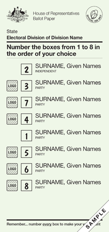
.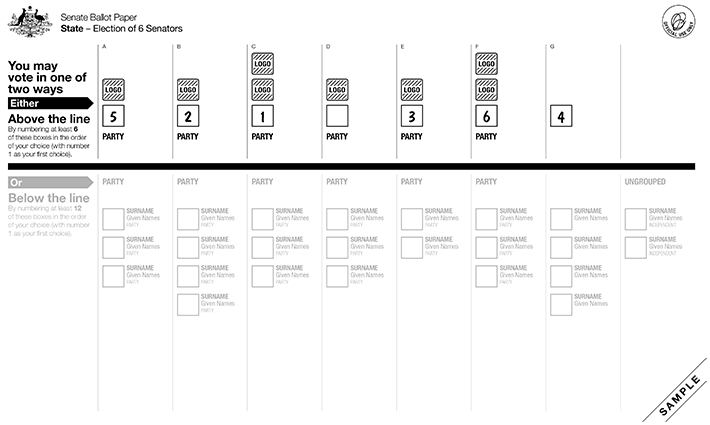
Data on Voter Counts
2022 Australian Federal Election Data
Let’s download some data
Go to https://results.aec.gov.au
Download the distribution of preferences by candidate by division for the 2022 Australian Federal Election
Select:
- 2022 federal election
- Downloads
- Distribution of preferences by candidate by division
Can also download directly using the link: https://results.aec.gov.au/27966/Website/Downloads/HouseDopByDivisionDownload-27966.csv
Voting Data
House of Representatives
Electoral district of Monash
Let’s have a look at the electoral district named “Monash”
Rows: 224
Columns: 14
$ StateAb <chr> "VIC", "VIC", "VIC", "VIC", "VIC", "VIC", "VIC", "VIC…
$ DivisionID <dbl> 323, 323, 323, 323, 323, 323, 323, 323, 323, 323, 323…
$ DivisionNm <chr> "Monash", "Monash", "Monash", "Monash", "Monash", "Mo…
$ CountNumber <dbl> 0, 0, 0, 0, 0, 0, 0, 0, 0, 0, 0, 0, 0, 0, 0, 0, 0, 0,…
$ BallotPosition <dbl> 1, 1, 1, 1, 2, 2, 2, 2, 3, 3, 3, 3, 4, 4, 4, 4, 5, 5,…
$ CandidateID <dbl> 36561, 36561, 36561, 36561, 36737, 36737, 36737, 3673…
$ Surname <chr> "MORGAN", "MORGAN", "MORGAN", "MORGAN", "BROADBENT", …
$ GivenNm <chr> "Mat", "Mat", "Mat", "Mat", "Russell", "Russell", "Ru…
$ PartyAb <chr> "GVIC", "GVIC", "GVIC", "GVIC", "LP", "LP", "LP", "LP…
$ PartyNm <chr> "The Greens", "The Greens", "The Greens", "The Greens…
$ Elected <chr> "N", "N", "N", "N", "Y", "Y", "Y", "Y", "N", "N", "N"…
$ HistoricElected <chr> "N", "N", "N", "N", "Y", "Y", "Y", "Y", "N", "N", "N"…
$ CalculationType <chr> "Preference Count", "Preference Percent", "Transfer C…
$ CalculationValue <dbl> 9533.00, 9.86, 0.00, 0.00, 36546.00, 37.79, 0.00, 0.0…District: Monash
Rows: 56
Columns: 14
$ StateAb <chr> "VIC", "VIC", "VIC", "VIC", "VIC", "VIC", "VIC", "VIC…
$ DivisionID <dbl> 323, 323, 323, 323, 323, 323, 323, 323, 323, 323, 323…
$ DivisionNm <chr> "Monash", "Monash", "Monash", "Monash", "Monash", "Mo…
$ CountNumber <dbl> 0, 0, 0, 0, 0, 0, 0, 0, 1, 1, 1, 1, 1, 1, 1, 1, 2, 2,…
$ BallotPosition <dbl> 1, 2, 3, 4, 5, 6, 7, 8, 1, 2, 3, 4, 5, 6, 7, 8, 1, 2,…
$ CandidateID <dbl> 36561, 36737, 36065, 37629, 37637, 36455, 36914, 3603…
$ Surname <chr> "MORGAN", "BROADBENT", "LEONARD", "HICKEN", "WELSH", …
$ GivenNm <chr> "Mat", "Russell", "Deb", "Allan", "David Matthew", "J…
$ PartyAb <chr> "GVIC", "LP", "IND", "ON", "CYA", "ALP", "LDP", "UAPP…
$ PartyNm <chr> "The Greens", "Liberal", "Independent", "Pauline Hans…
$ Elected <chr> "N", "Y", "N", "N", "N", "N", "N", "N", "N", "Y", "N"…
$ HistoricElected <chr> "N", "Y", "N", "N", "N", "N", "N", "N", "N", "Y", "N"…
$ CalculationType <chr> "Preference Count", "Preference Count", "Preference C…
$ CalculationValue <dbl> 9533, 36546, 10372, 7289, 674, 24759, 3548, 3991, 959…Visualising the counts
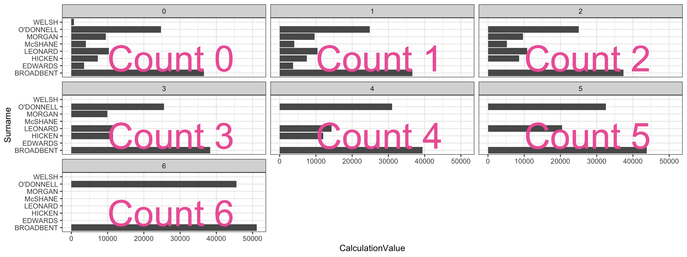
Better
Order candidates by counts!!!
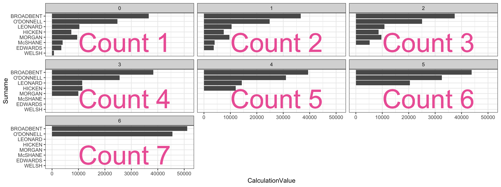
Winner:
Russel
Broadbent
Code
Where is the electoral district of Monash?
It doesn’t include Monash Clayton campus- Check here.
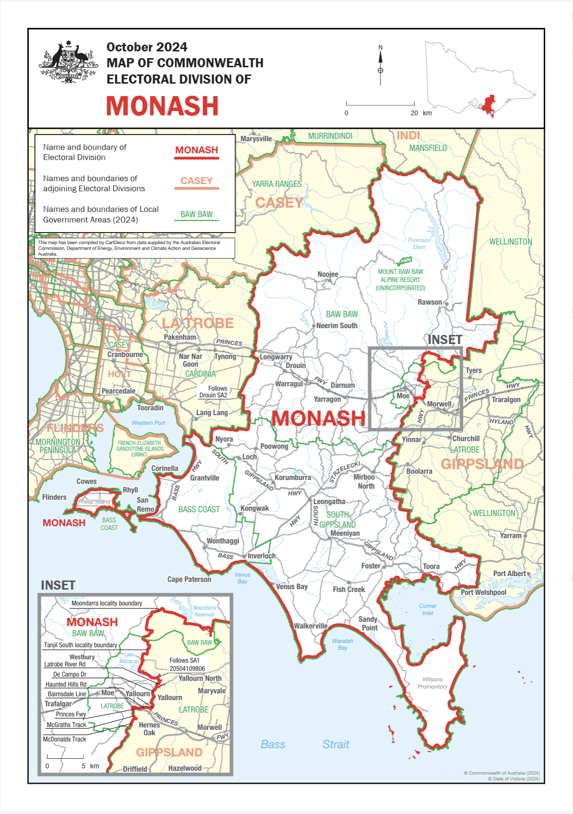
Electoral district of Hotham
Does include Monash Clayton campus - Check here.
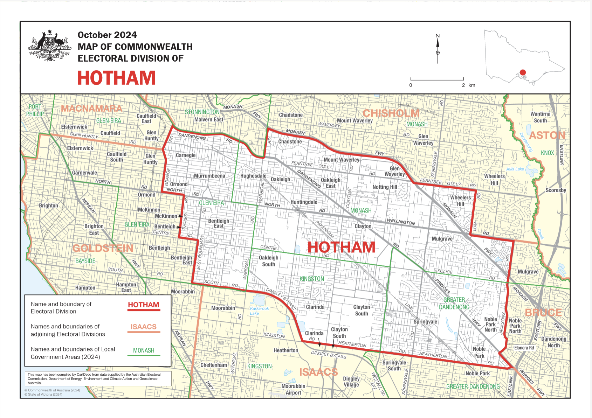
Find my electorate
Tip
There is a handy tool to find out which electorate you live in.
You can search by electorate, locality, suburb or postcode.
But wait …
Something weird happens if I search using the Monash Clayton postcode of 3800.
What happens and why?
What might this mean for other analysis I do using the election data?
Maps of Electoral Results
Australian Electorates Divisions
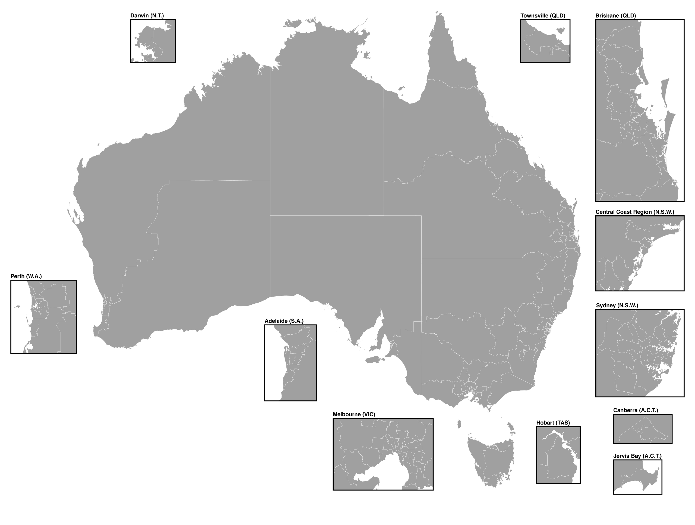
There were 151 electorates in 2022.
The geographical boundaries of the electoral divisions are determined by the Redistribution Committee and are redrawn every so often to ensure similar number of electors in each electoral division for a given state or territory.
Electoral Boundaries
Electoral boundaries can change across years
Click here for a video explainer on how electoral boundaries are decided and redrawn.
Break out discussion
Have any boundaries changed from 2022 to 2025?
If so which ones?
What would that mean for comparing election results between years?
GIS data
GIS
GIS stands for Geographic Information System.
GIS is a framework for capturing and inspecting geographical data.
Federal electoral boundary
Electoral Boundaries
Data is found at https://www.aec.gov.au/electorates/gis/licence.htm
Agree to the license to get to the download page:
“The Licensee must make End-users aware the data was sourced from the Australian Electoral Commission and is used under licence.”
Note: the federal electoral boundary is provided by Australian Electoral Commission
© Commonwealth of Australia (Australian Electoral Commission) 2025
Download the ESRI zip file for Victoria.
To work with spatial data, we use the sf R-package.
Working with spatial data
Simple feature collection with 6 features and 9 fields
Geometry type: MULTIPOLYGON
Dimension: XY
Bounding box: xmin: 143.4412 ymin: -38.07451 xmax: 146.191 ymax: -36.38518
Geodetic CRS: GDA94
# A tibble: 6 × 10
E_div_numb Elect_div Numccds Actual Projected Total_Popu Australian Area_SqKm
<dbl> <chr> <dbl> <dbl> <dbl> <dbl> <dbl> <dbl>
1 1 Aston 377 111098 115439 0 0 114.
2 2 Ballarat 340 106745 115696 0 0 5399.
3 3 Bendigo 351 108821 117818 0 0 5285.
4 4 Bruce 450 112619 116317 0 0 115.
5 5 Calwell 314 99781 116976 0 0 221.
6 6 Casey 425 114652 119870 0 0 2481.
# ℹ 2 more variables: Sortname <chr>, geometry <MULTIPOLYGON [°]>Geometry object
MULTIPOLYGON (((145.3452 -37.85979, 145.3362 -37.85105, 145.3321 -37.85102, 145.3328 -37.84743, 145.3063 -37.84047, 145.3011 -37.83784, 145.281 -37.83314, 145.275 -37.83577, 145.2253 -37.83874, 145.2133 -37.84102, 145.2097 -37.85132, 145.2071 -37.85227, 145.2043 -37.85721, 145.1922 -37.87161, 145.1929 -37.88139, 145.2039 -37.89608, 145.2083 -37.89905, 145.2051 -37.90603, 145.2056 -37.92663, 145.2142 -37.93573, 145.2282 -37.95141, 145.2348 -37.94207, 145.2796 -37.9476, 145.2898 -37.95814, 145.289 -37.96284, 145.2934 -37.96398, 145.2999 -37.93146, 145.3038 -37.93259, 145.2964 -37.91047, 145.2928 -37.90734, 145.297 -37.90122, 145.305 -37.90571, 145.3113 -37.90091, 145.3219 -37.89818, 145.3043 -37.88546, 145.3061 -37.86902, 145.3039 -37.86285, 145.3169 -37.86321, 145.327 -37.8661, 145.3306 -37.86181, 145.3336 -37.86157, 145.339 -37.85695, 145.3426 -37.86133, 145.3452 -37.85979)))Visualisation in ggplot
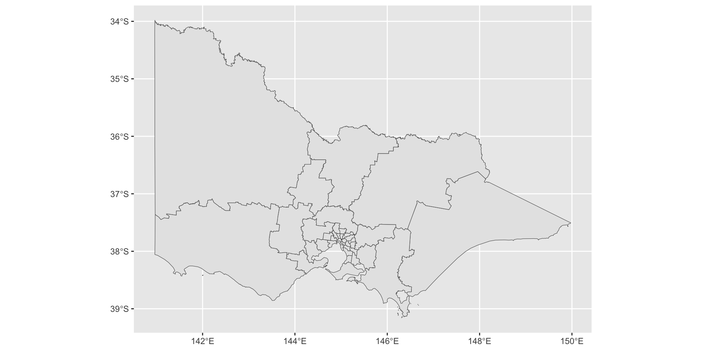
Combining election winners and map
Combining election winners and map
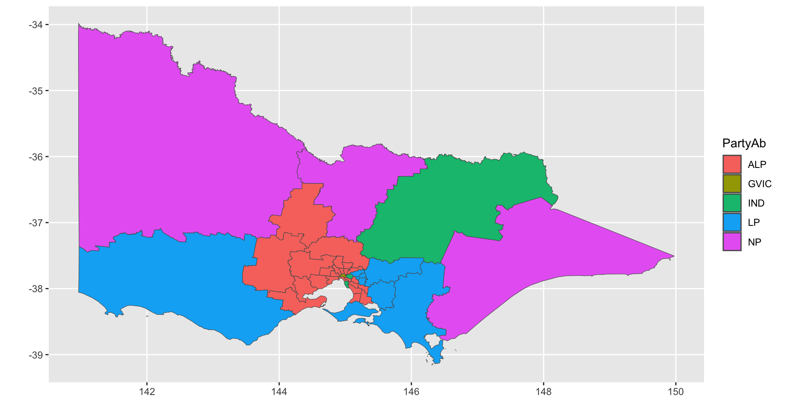
Detective work
Caution
Watch out for mismatched Division Names
e.g. “McEwen” vs “Mcewen”
This seems like its fixed now (?), but it was a problem in the past.
For cases like these you might need fuzzy/partial string matching
Try
agrepl()function
Using colors wisely
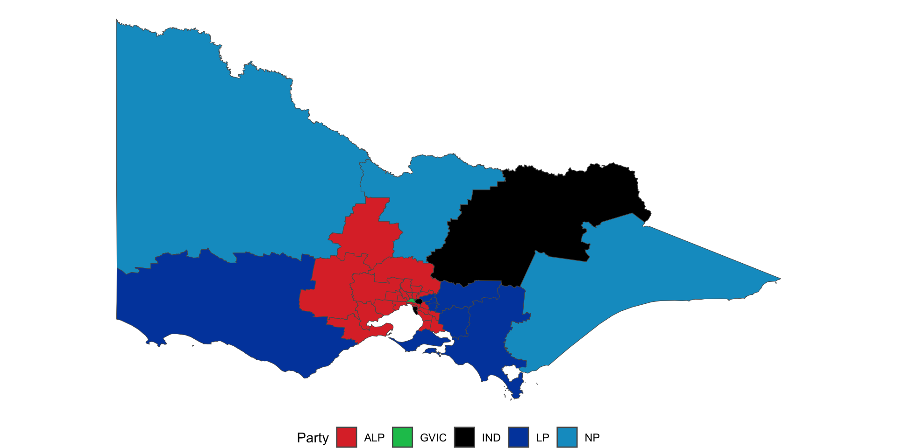
Zoom
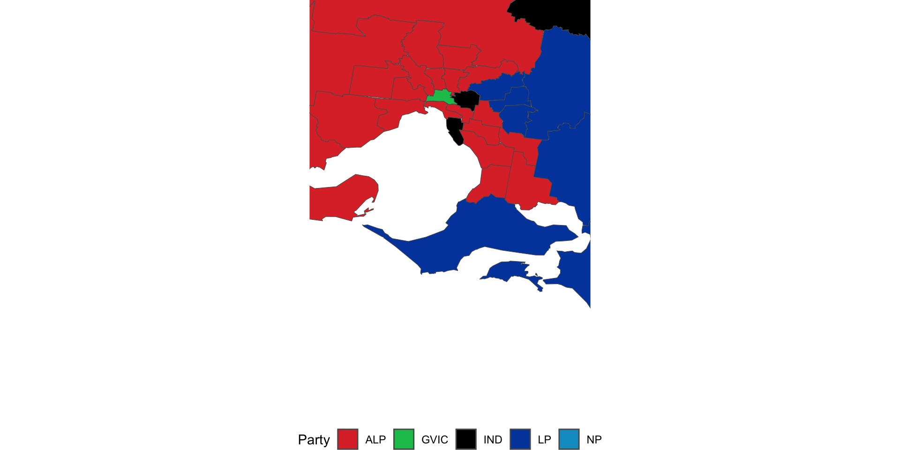
Traditional Maps
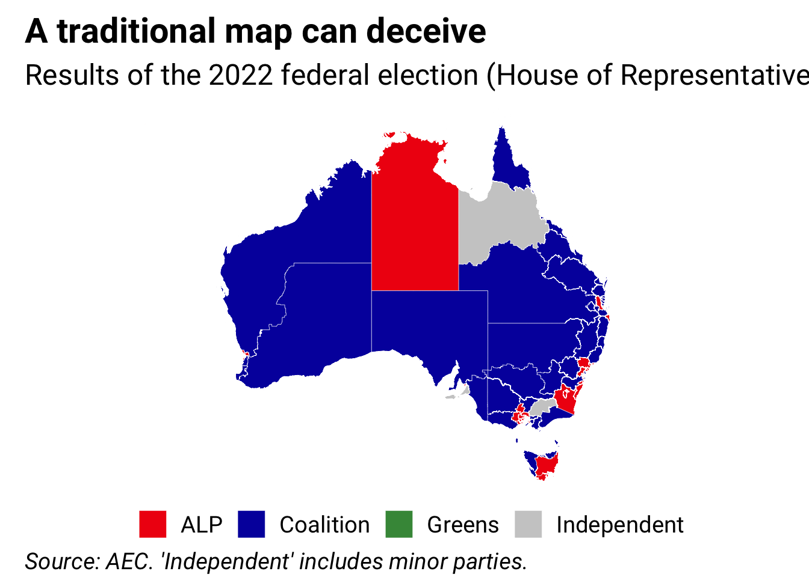
Hex Maps
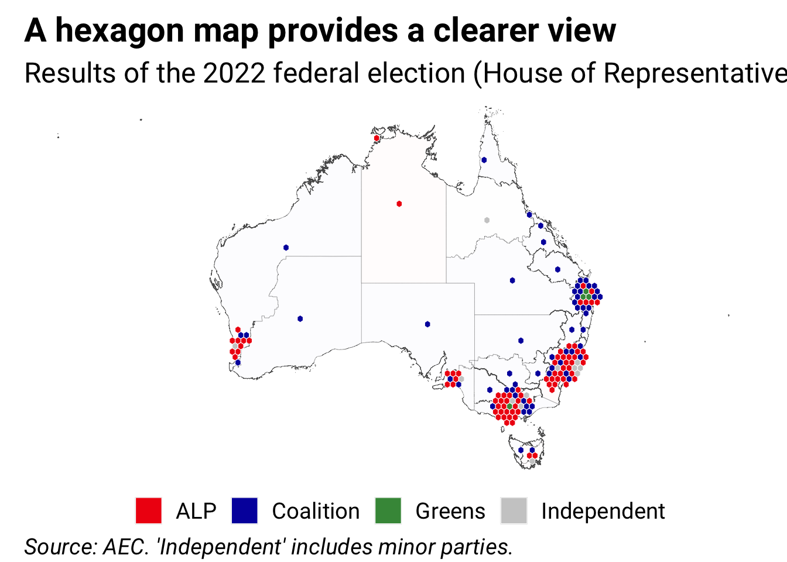
Visualising Maps
Watch out
Traditional maps can be mislead you about election results
Larger areas don’t mean more votes
Better to give equal visual weight
Coordinate reference system (CRS)
Geographic coordinate reference systems
- Geographic CRSs identify a location on the Earth’s surface by longitude and latitude.
- Longitude is the East-West direction in angular distance from the Prime Meridian plane.
- Latitude is the angular distance North or South of the equatorial plane.
Projected coordinate reference systems
- All projected CRSs are based on a geographic CRS.
- Map projections convert the three-dimensional surface of the Earth into Easting and Northing (x and y) values (typically meters) in a projected CRS.
- These projected CRSs are based on Cartesian coordinates on a implicitly flat surface.
- Some deformations are introduced in the process, e.g. area, direction, distance or shape, while preserving one or two of these properties.
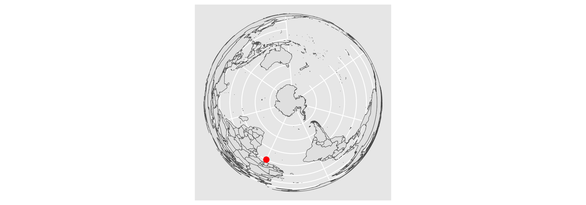
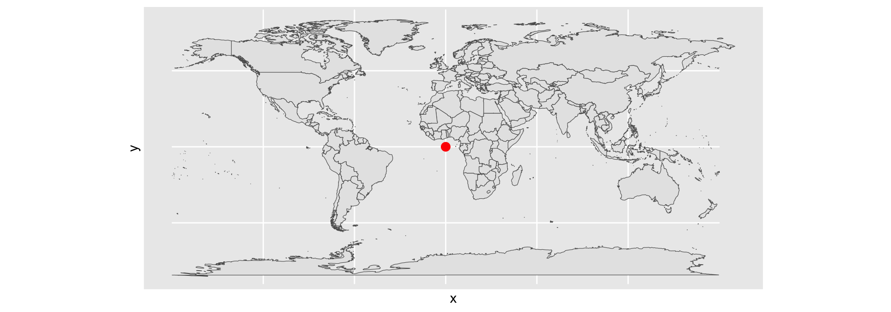
Well Known Text (WKT)
- Open Geospatial Consortium (OGC) developed an open standard format for describing CRSs called WKT
Coordinate Reference System:
User input: GDA94
wkt:
GEOGCRS["GDA94",
DATUM["Geocentric Datum of Australia 1994",
ELLIPSOID["GRS 1980",6378137,298.257222101,
LENGTHUNIT["metre",1]]],
PRIMEM["Greenwich",0,
ANGLEUNIT["degree",0.0174532925199433]],
CS[ellipsoidal,2],
AXIS["geodetic latitude (Lat)",north,
ORDER[1],
ANGLEUNIT["degree",0.0174532925199433]],
AXIS["geodetic longitude (Lon)",east,
ORDER[2],
ANGLEUNIT["degree",0.0174532925199433]],
USAGE[
SCOPE["Horizontal component of 3D system."],
AREA["Australia including Lord Howe Island, Macquarie Island, Ashmore and Cartier Islands, Christmas Island, Cocos (Keeling) Islands, Norfolk Island. All onshore and offshore."],
BBOX[-60.55,93.41,-8.47,173.34]],
ID["EPSG",4283]]GDA94 Map Projection
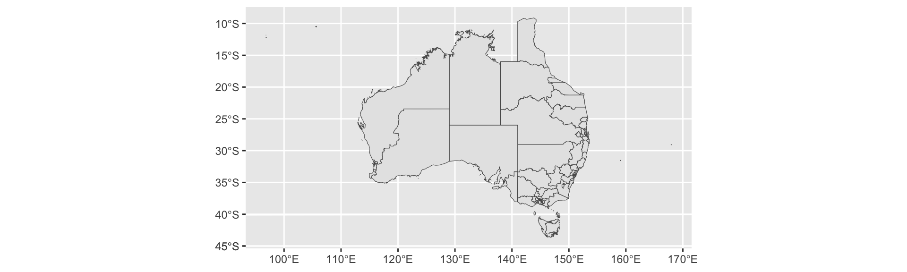
Changing map projections
Map projections may be modified in multiple methods (it’s beyond this unit to delve deep into this).
Below uses the Lambert azimuthal equal-area projection centered on the longitude and latitude of (rough) Melbourne coordinates via
proj4string:
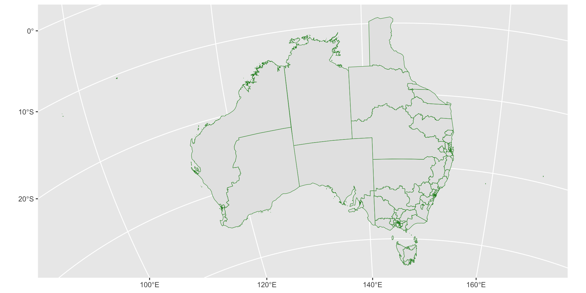
Wrap Up
Summary
Australian Election Case Study
We went through how to find and use data from the Australian election
This included how to deal with preferential voting counts
Learnt about how to plot maps in R using the sf package
This required learning about coordinate reference systems
Questions

ETC5512